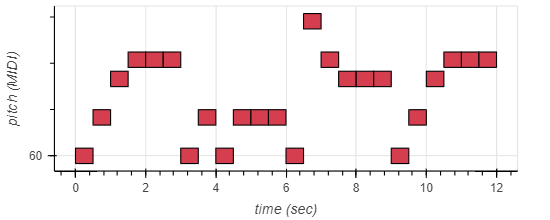
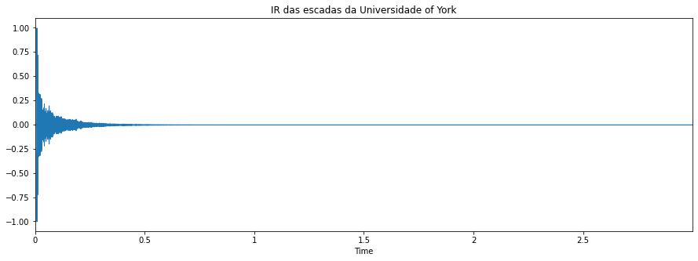
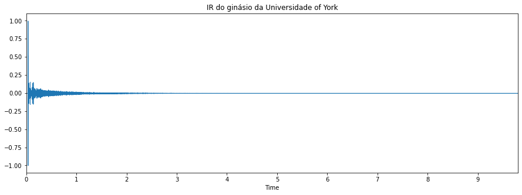
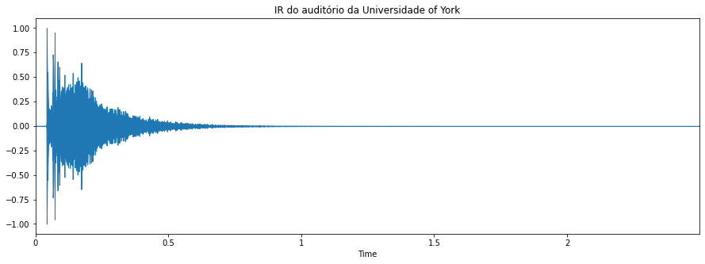
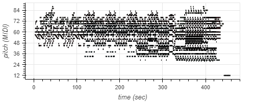
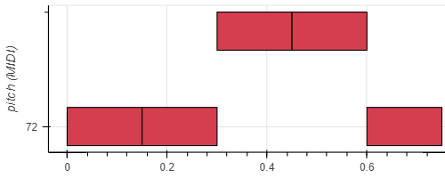
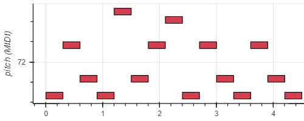
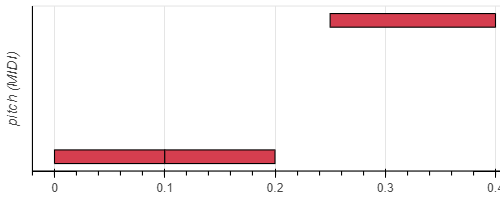
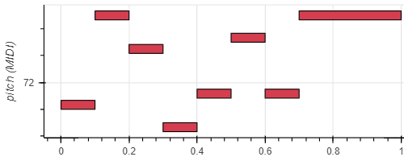

A seguir é apresentada a música de maior duração criada pelo grupo tocada em três ambientes distintos.
Música escolhida pelo grupo

Plot MIDI - Música grupo
Ambiente 1 - Escadas da Universidade of York

IR das escadas da Universidade de York
Música tocada no ambiente 1
Ambiente 2 - Ginásio da Universidade of York

IR do ginásio da Universidade de York
Música tocada no ambiente 2
Ambiente 3 - Auditório da Universidade of York

IR do auditório da Universidade de York
Música tocada no ambiente 3
Áudio-descrição desta seção.
A seguir é apresentada a música stairway to heaven do grupo led zeppelin, tocada em três ambientes distintos
(os mesmos ambientes nos quais a primeira música foi tocada).
stairway to heaven

Plot MIDI - stairway to heaven
Música tocada nas escadas da Universidade of York
Música tocada no ginásio da Universidade of York
Música tocada no auditório da Universidade of York
Áudio-descrição desta seção.
A seguir é apresentada a música criada pelo integrante Fábian
Música criada pelo Fábian

Plot MIDI - Música criada pelo Fábian.
Música tocada nas escadas da Universidade of York
Música tocada no ginásio da Universidade of York
Música tocada no auditório da Universidade of York
Áudio-descrição desta seção.
A seguir é apresentada a música criada pelo integrante Fernando.
Música criada pelo Fernando

Plot MIDI - Música criada pelo Fernando
Música tocada nas escadas da Universidade of York
Música tocada no ginásio da Universidade of York
Música tocada no auditório da Universidade of York
Áudio-descrição desta seção.
A seguir é apresentada a música criada pelo integrante Gabriel.
Música criada pelo Gabriel

Plot MIDI - Música criada pelo Gabriel
Música tocada nas escadas da Universidade of York
Música tocada no ginásio da Universidade of York
Música tocada no auditório da Universidade of York
Áudio-descrição desta seção.
A seguir é apresentada a música criada pelo integrante Pietro.
Música criada pelo Pietro

Plot MIDI - Música criada pelo Pietro
Música tocada nas escadas da Universidade of York
Música tocada no ginásio da Universidade of York
Música tocada no auditório da Universidade of York
Áudio-descrição desta seção.
A seguir é apresentada a versão original do arquivo MIDI da música Stairway to Heaven do Led Zeppelin.
Stairway to Heaven (original) - Led Zeppelin
O audio a seguir altera a violão acústico da música para um órgão.
Stairway to Heaven (órgão) - Led Zeppelin
Áudio-descrição desta seção.
Neste laboratório foi possível aprender a gerar e manipular arquivos MIDI tanto com a biblioteca apresentada
como em softwares como o MuseScore. Todos os integrantes conseguiram elaborar um pequeno áudio bem como
tocá-los em três ambientes diferentes: nas escadas, no ginásio e no auditório da Universidade de York,
utilizando para isso as respostas ao impulso destes ambientes, obtidas em https://www.openair. hosted.york.ac.uk/.
Além disso, duas músicas de maior duração foram utilizadas para serem "tocadas" nestes ambientes, sendo uma
delas a música Stairway to Heaven do Led Zeppelin, a qual também teve uma versão nova gerada utilizando um
órgão no lugar de uma violão acústico.